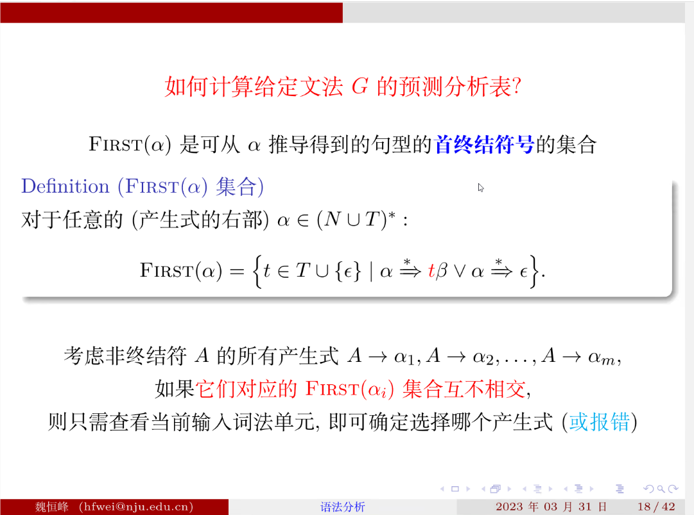
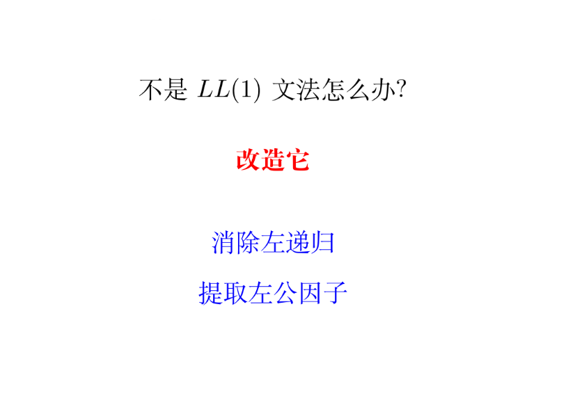
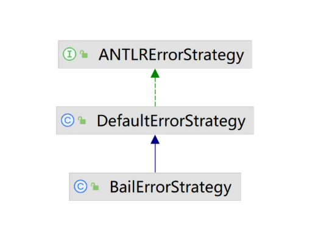
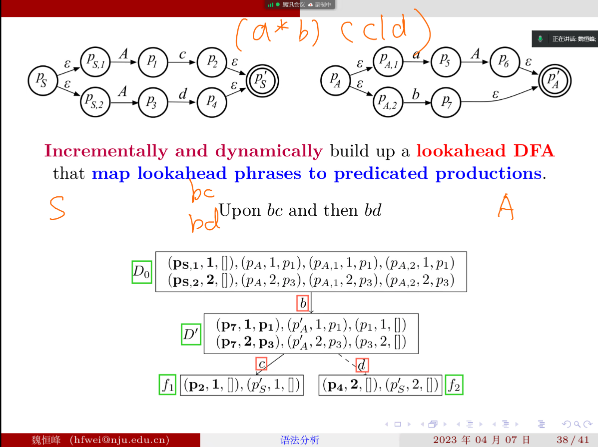
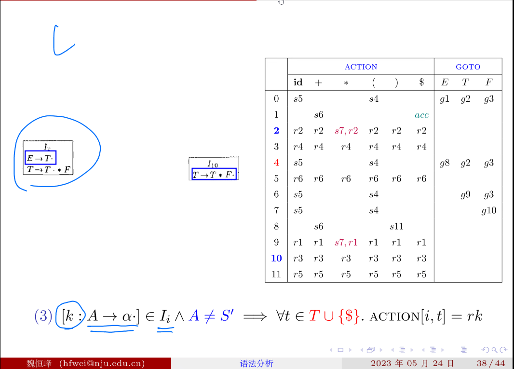

# 编译原理 02 - 语法分析
主要内容：如何用 antlr4 生成一个语法分析器。手写语法分析器比较困难，不作要求。
lesson1 任务： 用 cymbol 语言（龙书中提供的一种简化版 c 语言）写一段程序，并生成如下的函数调用关系图。

lesson2 任务：写一个简单的计算器
在为自己的语言编写语法分析器时，可能会遇到一些问题。
# 问题一：二义性文法
考虑下列定义：

if a then if b then c else d 可以有两种解释

龙书上给的无二义性语法：
难题是如何证明没有二义性（见龙书）
在 antlr4 中，写在前面的定义如果能被匹配到，就会优先选择写在前面的定义，以防止歧义出现的错误。
# 运算符的结合性带来的二义性
没有规定是左结合还是右结合，可以有两种解释，导致结果不一样。
antlr4 规定运算符默认是左结合的，以消除这种歧义。
如何明确指明是右结合的（如乘方运算符要规定为右结合的）：
# 运算符优先级带来的二义性

在 antlr4 里，写在前面的运算符优先级更高。
如果不是 antlr4，比如在某些比较古老的工具中，需要我们自己处理。
# 如何根据代码生成函数调用图
先用 antlr4 生成语法分析树，然后用 dfs 方法遍历语法树。
# 铺垫
antlr4 提供了 listener, 在 antlr 帮我们遍历语法树时，当 antlr4 进入一类节点时，会触发 enter 节点事件，离开时会触发 exit 节点事件。
问题：需要细分，比如函数调用和 赋值语句都是 expr，那么进入 expr 节点的时候都会触发 enterExpr 事件，不好针对特定情况处理。
情况一：
function call 和 赋值语句都是 expr，因此触发了 enterExpr 时间后也无法细分是哪类 expr。
解决方法：在 g4 文件对应的定义后加上 # fuctioncall , 要加的话后面的也要加上
情况二： expr ('*' | '/') expr 被定义为 MutiDiv, 则进入 MutiDiv 的时候不知道是还是除法。
解决方法：
expr (op = '*' | op = '/') expr 进入时判断变量 op 的值是什么便可
# 如何生成一个调用图
按 Graphviz 语法编写.dot 文件，会自动生成调用图
# 实现一个简单的计算器
# listener 模式的一个弊端
antlr 提供的 listener 模式方法的返回值是 void，但是我们想实现一个计算器的话，在 dfs 语法树的时候就必须利用子节点的值来计算。为了解决这个问题，antlr4 提供了一个标注（Annotate) 语法树的功能。
eg:
//calcuListener 里的方法 | |
@Override | |
public void exitParens(CymbolParser.ParensContext ctx) { | |
values.put(ctx,values.get(ctx.expr())) | |
} | |
@Override | |
public void exitAddSub(CymbolParser.AddSubContext ctx) { | |
int lvalue = values.get(ctx.lhs); //lhs (left hand side) 在.g4 文件中赋值为前面的 expr | |
int rvalue = values.get(ctx.rhs); | |
if (ctx.op.getType() == ADD) { | |
values.put(ctx, lvalue+rvalue); | |
} else { | |
values.put(ctx,lvalue-rvalue); | |
} | |
} |
# 上下文无关文法
编写 g4 文件时实际上用的就是上下文无关文法
# 什么是上下文相关文法
以第三行与第七行为例：B 是展开为 Z 还是 b 与它的上下文（这里是前面的字符）有关
这段文法表示的是 an*bn*c^n ，可以证明用上下文无关文法是无法描述这个语言的。
# 推导
# 为什么不使用正则表达式去描述语法

证明如下：

其中 Ai 对应的是 DFA 中的第 i-1 个状态
因为 m > k, 所以一定存在状态 si ，在 si 停留了两次，假设又经过了 j 步能够到达第二次 si
根据假设，aibi 能够到达终止状态，那么 a(i+j)bi 也能到达终止状态，与假设矛盾，证明完毕。
# LL (1) 语法分析器
# 总览
# 自顶向下的含义
# 两个 L 的含义
# 递归下降的含义
eg: 先默认选择产生式的问题已经被解决了，只演示递归下降的过程
# 如何选择产生式
# 什么是 LL (1) 文法
LL（1）中 1 的含义：只需要查看当前的输入符号就可以确定选择哪条产生式进行展开
# LL (1) 的伪代码
假设预测分析表已经有了
# 难点：如何生成预测分析表
竖着看：什么时候选择展开为 func_call, 还是 decl。很简单，看当前输入的前面是 int 还是 ID。
横着看：如何确定 optional_init 是否展开为空串
问题：什么时候可以选择空串展开？ 见后

为什么中间两步要去除空串，比如：因为即使 Y1 可以被展开为空串，后面的 Y2-YK 不一定能展开为空串，X 的开头不一定是空串。空串要单独判断
dollar 符是文件结束符号
因为 follow 集合考虑的是终结符，所以规则 3 要去掉空串
例子：
这个例子中只看 c 无法确定 Y 是由 3 号还是 4 号规则展开，则不是 LL (1) 文法
# 非递归的预测分析算法（不作要求）
# 改造为 LL (1) 文法

为什么左递归不是 LL (1) 文法：
LL (1) 的递归下降算法会出问题：
E 展开为 E+T，然后 E+T 中的 E 展开为 E+T。。。
问题：改写成右递归比较复杂，而且改造后可读性较差
# 直接左递归的改造
改造的模板：
# 间接左递归的改造
思路：改造后的文法中的每一条展开式都应该满足红框里的条件 因为展开后的编号越来越大，就永远回不到自己。
例子：
- 首先对所有的非终结符编号： S：A1， A：A2， B：A3
- 看所有的非终结符的展开式是否满足单调递增性质
- 发现 B-> Sa|a 不满足改造条件， 将非终结符慢慢展开，发现展开为最后一行时变成了直接左递归，直接左递归用上面的方法处理。
# 左递归改造算法要求：
# 左公因子的改造
为什么左公因子不行 ，比如第八行原来的 decl 内容，两个展开式开头都是 'int'。
改造方法简单，如第 13 行的定义
# Adaptive LL (*) 语法分析算法
也称 ALL STAR 算法，antrl4 采用这种算法
ChatGPT 评价：
第 2,3 行 含有 LL (1) 的特性：不用猜测 自顶向下
第 4 行： 解决二义性
第 7 行：解决左递归
# antrl4 对左递归的改造，将左递归改造成循环 (迭代)
参数_p 指的是优先级，优先级按下面书写的顺序（ID 1,INT 2, 加法 3 乘法 4） 当 3 >= _p 时 才能展开为加法。展开后变成了 expr [4]，优先级升了一级（优先级上升算法名称的由来）
以 1+2+3 为例，右侧手写部分为算法伪代码
以 1+2*3 为例
# 右结合运算符的处理
想让一个运算符为右结合，再递归调用的时候传入的优先级应该不变。
# antlr4 是如何进行错误报告的
LexerNoViableAltException: 词法分析的时候遇到未知字符，出现错误
NoViableAltException: 面对当前的输入时，要展开当前的非终结符，发现没有备选分支可选
InputMismatchException: 根据选择好的备选分支展开时，发生终结符不匹配错误。
antlr4 的强大之处在于其报错之后不会马上结束程序，而是以报错， 恢复， 继续分析的流程来解析程序
# antlr4 的基本策略
四项基本原则：
- 特殊情况，特殊处理
- 一般情况，统一处理
- 统一处理，精细控制
- 自定义错误处理策略
# 特殊情况，特殊处理
单词法符号移除： class 9 T {int i;} 9 会被移除
单词法符号补全： class {int i;} 会在 class 后面补一个符号
# 一般情况，统一处理
例子：

antlr4 看到一个中括号，可以报错：中间缺失一个 expr
antlr 通过递归调用匹配，发现当前终结符匹配不了，于是递归返回，每一层看当前符号是不是一个想要的符号（所谓想要的符号，即假装当前想匹配的非终结符已经匹配成功，接下来应该遇到什么终结符，类似 Follow 集合，但不等价，称为 Following 集合）, 恢复到 expr 层，假装 expr 已经匹配成功，右中括号可以匹配，然后继续解析后面的。
注意 Follow（静态）集合与 Following（动态）集合的区别。
恢复时的动作是：丢弃词法单元直到碰到当前 Following 集合中的某个词法单元，然后从当前规则中恢复，也就是返回上一层，继续分析。比如，在 [] 例子中（见上图），atom 期望 INT/ID，与] 不匹配，则不断丢弃输入中的词法单元，直到遇到 ^ 或者 ]。对于这个例子，恰巧当前词法单元就是 ]，所以并没有丢弃任何词法单元，就能从 atom 中恢复，返回到 expr 层。expr 期望看到 ^，与 ] 也不匹配，则不断丢弃词法单元直到遇到 ]。这里同样也没有丢弃任何词法单元，就能从 expr 中恢复，返回到 group 层。group 期望看到 ]，与当前词法单元匹配，成功恢复。
# 统一处理，精细控制
所谓优雅：即以最小的代价恢复过来
例子：
类的文法定义为 class ID { member+ }
不优雅的错误恢复：匹配 member 的时候，看到 y 不属于一个 member，直接退出 while 循环，即整个 member + 匹配失败。
优雅的错误恢复，相当于在匹配 member 的 while 循环中加了一个 continue，继续匹配之后的 member。
# 自定义错误处理策略
比如，（已知语法正确）关闭默认错误处理功能，提高运行效率
比如，（出错代价太大）在遇到第一个语法错误时，就停止分析
使用 antrl4 提供的 strategy 模式：

# All Star 算法的基本思想 构建 lookahead DFA
例子：
这个文法不属于 LL（k) 文法 因为它表示的字符串为 **(a*b)(c|d)**。但给出 bc 或 bd antlr4 能判断出从 Ac 和 Ad 哪条展开式展开。

对每一个非终结符都画一个增强迁移网络 ATN (Augmented Transitjion Network), 如上图所示。All star 算法的核心思想: **Incrementally and dynamically build up a lookahead DFA that map lookahead phrases to predicated productions.** 关键：增量式构造，“向前看” DFA。
lookahead DFA 作用：帮助选择备选分支。（比如当看到 S 不知道选哪条展开式，使用 DFA 辅助判断）。
策略：既然不知道要选哪条备选分支，就并行地探索所有的备选分支。
期望情况：只有一条路径成功走到了最后
有歧义问题：多条路径还在走的时候，没有了输入，或者多条路径处理时汇合。
每个状态有三个分量：第一个是状态名，第二个是选择的备选分支，第三个分量表示递归调用完当前 DFA 后到达的状态。状态是怎么定的：注意通过 ε 能到达的节点是分不开的。（求每个节点的 ε 闭包）
看到 d 和 c 后就能发现第二个分量分离了，即能确定用哪条分支展开了。
# LR (0) 语法分析器
LL (k) 的弱点：
在仅看到右部的前 k 个词法单元时就必须预测要使用哪条产生式
LR (k) 的优点：
看到与正在考虑的这个产生式的整个右部对应的词法单元之后再决定

rm： right most 最右推导
为什么是最右推导：
因为规约的顺序实际上是一个反向最右推导的过程，为了我们要从左往右扫描输入相匹配

在栈中，交替进行移入和规约操作
问题转化为：
利用 LR 分析表指导语法分析过程：
一开始处于 0 号状态，看到当前词法单元为 id，进行 s5 操作。
s5 操作含义：
s： shift 移入， 将 id 移入栈中
5： 调整当前语法分析器状态为 5
然后要右移指向当前词法单元的指针（小点）
右边 “GOTO” 的小表中的数字前应该有一个 g
比如 0 号状态下压入一个 F ，查表发现应该实现 g3，即将 F 压入栈，转向 3 号状态。
# “栈” 上操作
一开始栈中不为空，要压入一个 s0，表示起始处于 0 号状态，s 表示开始。
- 遇到 id 查表发现 0 号状态遇到 id 是 s5，则将 id 压入栈中，并在右边加上数字 5 表示当前处于 5 号状态。即压入 id5。指针右移指向 * 号。
- 查表，5 号状态遇到 * 号，做 r6 操作。用 6 号产生式规约，将栈顶的 id5 弹出，此时底下剩一个 s0，处于 0 号状态，然后要压入 F，查表，0 号状态移入 F 要 g3，压入 F3，转向 3 号状态。指针不变。
- 。。。
# LR 分析表如何生成
什么是句柄：
# 一个永远正确的定理
这个定理的推导不需掌握，但是这个定理是正确的
LR 自动机在追踪所有产生式的状态
小点表示当前追踪到了哪一个位置
# 增广文法
S 是开始符号，仅仅是技术上的一些处理。
# LR (0) 状态机的构造
如果要期望看到的文法符号串开头是一个非终结符，要做闭包！
比如 0 号状态一开始只有 E'-> . E
下面想要看到一个 E，但是 E 是一个非终结符，它可以展开为 1 号和 2 号产生式，2 号产生式又可以做闭包，直到所有产生式都包含进来了。
LR (0) 语法分析器在做句柄识别的时候，依赖的是一个 LR (0) 句柄识别有穷状态机
eg：
I1 状态是怎么构造的？
I0 看到一个 E，发现满足第一行和第二行的需求，于是将第一行与第二行移入 I1，并将小点右移。
I4 状态是怎么构造的？
I0 状态看到（ ，发现倒数第二行满足，于是将倒数第二行移入 I4，并将小点右移，然后发现接下来期望看到的 E 是一个非终结符，于是对 E 进行闭包展开。
哪些是接受状态？ 图中红框圈出来的是，因为其中包含了一些项，小点已经走到了末尾，表示发现了一个完整的句柄。而至于要不要规约，是接下来的事。
# 根据 LR (0) 自动机怎么构建分析表
可以看到，这张表与之前的那张表不太一样。之前的表是在构造了 LR (0) 语法分析器后，利用 SLR 的语法规范构造的表。而上图的表是利用 LR (0) 的规范构造的。
如何填写右边的表？
先填所有的 s 和 g。比如 0 号状态碰到 id 变到 5 号状态，则在 action 对应位置填入 s5。0 号状态碰到 E 进入 1 号状态，则在 goto 表中填入 g1。这是前两条规则。
填 r 的规则如下图的规则 3，在 LR (0) 中，如果碰到了可以做规约的第 k 个表达式，并且表达式的左部不是增广文法中的开始条件，则在 action 表对应位置填入 rk。
比如下图中的 I2 状态有一个可以规约的 E->T. 其中 E—>T 对应 2 号产生式，则在 2 号状态下遇到所有的符号都做规约，即 2 号产生式对应的行都填入 r2。同理 10 号产生式对应的行都填入 r3

之前规定了 A 不能是开始符号，如果是开始符号，采用规则 4。
四条规则总结：
要求 A 不是增广文法中扩展的 S'
上表中 s7,s2 s7,s1 有移入规约冲突，所以不是 LR (0) 文法
以 2 号产生式 E->T 为例，可以求出 FOLLOW (E) = {+,),$} 如果在二号状态遇到了 * 号，如果进行 r2 操作，即将栈里的 T 变成 E，则现在 E 的后边就跟着一个 * 号了 这是错误的。
# LR (1) 语法分析器
# SLR (1) 语法分析器
S 的含义：simple
把 L (0) 语法分析表构建的第三条规则修改后，就可以得到 SLR (1) 分析表
可算出 FOLLOW (E)=
为什么优于 SLR (1)， 因为 FIRST (gamma) 包含于 FOLLOW (A)

为什么 β 后面跟着 a，因为 β 可能是空串
LR(0) < LALR(1) < LR(1)
问题：合并后会不会影响到关联的其它状态？
不会，LR (0) 项相同，出边和对应的到达状态也是可以合并的
但是合并还是可能引起冲突的
# LR 算法的特点
为什么？ 因为一个 L 语言可以用 G1 文法和 G2 文法表示，这时 G1 可能刚好满足 SLR（1），G2 刚好满足 LR（1）
要区分 文法 和 语言
也就是一个语言能写出 LR (1) 的文法，就一定能写出 SLR (1) 的文法
{+,*} 属于 FOLLOW (E)
譬如这里的 I7 状态： + 号即属于 Follow (E) 也是当前看到的下一个符号，因此看到＋号既可以规约也可以移入，产生冲突。
这里根据实际地考量（优先级与结合性），即如果碰到 E+E+E 应该先算出左边两个 E 相加的结果，因此 E+E . 碰到＋号应该选择规约
# lab2
# 实验内容
- 本次实验需要完成语法分析与高亮，要求如下
- 根据实验指导内提供的文档完成 SysyParser.g4 并将 SysYParser.g4 中按下面已经给出的写法将 exp 和 cond 写成左递归
- 当输入文件存在语法错误时：输出语法错误在哪一行，格式为
Error type B at Line [lineNo]:[errorMessage]其中 lineNo 为出错的 token 首个字符所在行的行号，errorMessage 可自行定义，本实验不做要求，只要冒号前的信息正确即可，需要输出所有的错误 - 当输入文件不存在语法错误时：按照规定格式输出语法树 (含高亮)，输出格式详见样例一
- 使用 ** 标准错误输出（System.err）** 打印所有运行结果
# 实验过程
仍然需要重写 BaseErrorListener 实现一个自己的 myErrorListener。与实验一不同的是，除法 ErrorListener 的方式不同，本次实验要在语法分析的过程中进行错误检查。改写的 main 函数如下：
public static void main(String[] args) throws IOException { | |
if (args.length < 1) { | |
System.err.println("input path is required"); | |
} | |
String source = args[0]; | |
CharStream input = CharStreams.fromFileName(source); | |
// SysYLexer sysYLexer = new SysYLexer(input); | |
// sysYLexer.removeErrorListeners(); | |
// sysYLexer.addErrorListener(new myErrorListener()); | |
// List<Token> tokens = (List<Token>) sysYLexer.getAllTokens(); | |
SysYLexer sysYLexer = new SysYLexer(input); | |
CommonTokenStream tokens = new CommonTokenStream(sysYLexer); | |
SysYParser parser = new SysYParser(tokens); | |
parser.removeErrorListeners(); | |
parser.addErrorListener(new myErrorListener()); | |
ParseTree tree = parser.program(); | |
if (error) | |
return; | |
Visitor visitor = new Visitor(); | |
visitor.visit(tree); | |
// String[] rulenames = sysYLexer.getRuleNames(); | |
// for (Token token : tokens) { | |
// String tokenType = rulenames[token.getType()-1]; | |
// String tokenText = toDemical(token.getText()); | |
// String tokenLine = ""+token.getLine(); | |
// System.err.println(tokenType + " " + tokenText + " at Line "+tokenLine+'.'); | |
// } | |
} |
其中注释掉的部分是实验一的代码。这次要将 errorlistener 加到语法分析器 parser 上 并且利用 parser.program () 触发错误检查并生成语法树。注意，之所以用 program () 方法当做入口方法是因为 SysYParser.g4 的定义中 program 是最高的语言层次。
本次实验最重要的内容就是重写了一个继承自 SysYParserBaseVisitor 的类 Vistor 代码如下：
public static class Visitor extends SysYParserBaseVisitor<Void> { | |
public int depth = 0; | |
@Override | |
public Void visitChildren(RuleNode node) { | |
Void result = this.defaultResult(); | |
StringBuilder sb = new StringBuilder(); | |
sb.append(" ".repeat(Math.max(0, depth))); | |
int num = node.getRuleContext().getRuleIndex(); | |
String ruleName = SysYParser.ruleNames[num]; | |
ruleName = Character.toUpperCase(ruleName.charAt(0)) + ruleName.substring(1); | |
sb.append(ruleName); | |
System.err.println(sb.toString()); | |
int n = node.getChildCount(); | |
for(int i = 0; i < n && this.shouldVisitNextChild(node, result); ++i) { | |
depth ++; | |
ParseTree c = node.getChild(i); | |
Void childResult = c.accept(this); | |
result = this.aggregateResult(result, childResult); | |
depth --; | |
} | |
return result; | |
} | |
@Override | |
public Void visitTerminal(TerminalNode node) { | |
StringBuilder sb = new StringBuilder(); | |
sb.append(" ".repeat(Math.max(0, depth))); | |
int num = node.getSymbol().getType()-1 ; | |
if (num >= 0 && !ruleNames[num].equals("")) { | |
sb.append(toDemical(node.getText())).append(" "); | |
sb.append(ruleNames[num]); | |
System.err.println(sb.toString()); | |
} | |
return null; | |
} | |
private static final String[] ruleNames = { | |
"CONST[orange]", "INT[orange]", "VOID[orange]", "IF[orange]", "ELSE[orange]", "WHILE[orange]", "BREAK[orange]", "CONTINUE[orange]", "RETURN[orange]", | |
"PLUS[blue]", "MINUS[blue]", "MUL[blue]", "DIV[blue]", "MOD[blue]", "ASSIGN[blue]", "EQ[blue]", "NEQ[blue]", "LT[blue]", "GT[blue]", | |
"LE[blue]", "GE[blue]", "NOT[blue]", "AND[blue]", "OR[blue]", "", "", "", "", | |
"", "", "", "", "IDENT[red]", "INTEGER_CONST[green]", | |
"", "", "", "", "", "", | |
"", "", "" | |
}; | |
} |
visitChildren 是当 dfs 遍历每个语法节点时都会触发的方法，一开始没有想到在遍历某个节点时如何得到该节点的深度，后面通过维护一个全局变量 depth 来实现。当进入节点前 depth 会 + 1 退出时会 - 1。

这里简单的把 accept 方法理解为会调用 visitor.visitChildren (currentnode) 的函数就好了。